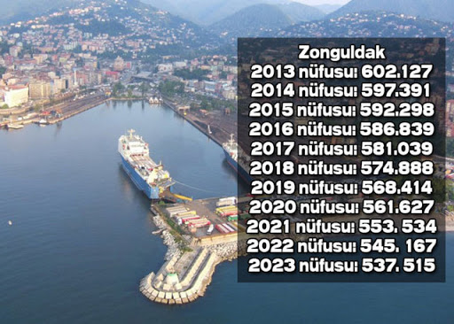

KARA ELMAS DİYARI "ZONGULDAK"
ZONGULDAK TARİHÇESİ
Kısa bir zamanda şehir merkezi haline gelen Zonguldak’ın tarihi, yörenin tarihinden çok çok yenidir. Şehrin oluşumu, bu havalideki kömür madeninin işletilmesiyle başlamıştır.
Madenlerin faaliyete geçmesiyle havzaya yerli ve yabancı sermaye girişi başlamıştır. Bu suretle kömür ocakları, birbiri ardına açıldıkça baş gösteren ekonomik ve sosyal koşullar, maden ocaklarının açıldığı bu sahada yeni bir yerleşim birimi meydana getirmiştir. 1896 yılına kadar yapılan yazışmalarda Zonguldak, Ereğli livasına bağlı “Zonguldak nam mevki” olarak anılmıştır.
1893’de Zonguldak limanı mendireğinin inşası ile faaliyet sahası daha da genişleyen Zonguldak mevkinin nüfusu ve bina sayısı hızla çoğaldığından, tarihi Zonguldak’a oranla çok eski olan Gaca Köyü, konumunu muhafaza ederken, Elvan Köyü’nün mahallesi olan Zonguldak mevkii 1899 yılında kaza olmuştur. Zonguldak 1920 syılına kadar kaza teşkilatı olarak yönetilmiştir. Ancak maden cevherinin üretimi ve satışı arttıkça, daha doğrusu ekonomik koşullara şartlara paralel olarak şehirde nüfus ve yapı adedi de arttığından, Zonguldak, 1 Haziran 1920 tarihinde kaza sınıfından çıkarılarak mutasarrıflık (ilçe) sınıfına alınmıştır.
Kurtuluş Savaşı ve sonrasında kurulan Cumhuriyet’le birlikte havza hak ettiği önemi görmüş ve Zonguldak 1 Nisan 1924 tarihinde Cumhuriyet sonrası kurulan ilk il olmuştur.
Zonguldak Nüfusu

Zonguldak'ın Gezilecek Yerleri
Halil Paşa Konağı

Cehennemağzı Mağaraları
Filyos Kalesi

Harmankaya Şelalesi

Alemdar Gemisi